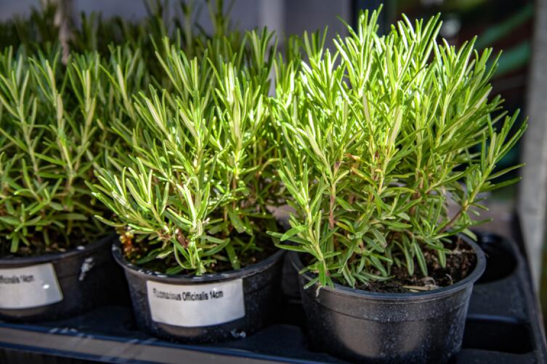
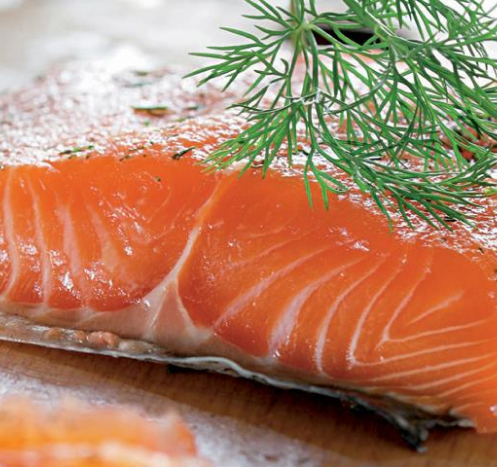
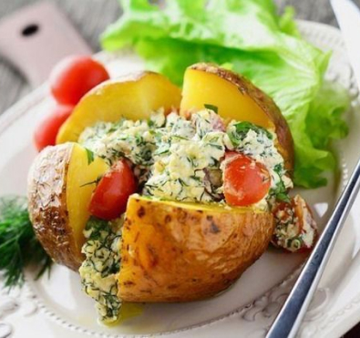

Чем полезны ароматные травы, используемые в приготовлении пищи?
Ни одна хозяйка не сможет представить себе процесс приготовления домашних блюд без использования зелени в свежем или сушеном виде. Благодаря такой приправе еда приобретает не только пряный аромат и чудесный вкус. Она становится более полезной!
У розмарина есть замечательное свойство сочетаться практически с любыми блюдами, будь то мясные и овощные кушанья или выпечка. Эта приправа дарит еде восхитительный аромат хвойного леса, теплый и сильный одновременно. От хлеба с розмарином разыгрывается аппетит, а перед запеченной с этой зеленью картошкой и вовсе невозможно устоять!

Розмарин
Фото: Depositphotos
Ни одна хозяйка не сможет представить себе процесс приготовления домашних блюд без использования зелени в свежем или сушеном виде. Благодаря такой приправе еда приобретает не только пряный аромат и чудесный вкус. Она становится более полезной!
У розмарина есть замечательное свойство сочетаться практически с любыми блюдами, будь то мясные и овощные кушанья или выпечка. Эта приправа дарит еде восхитительный аромат хвойного леса, теплый и сильный одновременно. От хлеба с розмарином разыгрывается аппетит, а перед запеченной с этой зеленью картошкой и вовсе невозможно устоять!
Розмарин
Фото: Depositphotos
Новый вкус ваших блюд
Пряные травы можно успешно выращивать на кухонном подоконнике в зимнее время и существенно разнообразить ассортимент зелени, имеющейся в продаже. Помимо своих ароматических достоинств, многие из них демонстрируют разные оттенки листвы и не менее эффектны, чем признанные комнатные любимцы. Хотите – выращивайте их в отдельных горшочках, а хотите – составьте душистый микс в широкой плошке или небольшом балконном ящичке. Продаются и специальные емкости-«огородики» с карманами или отверстиями. Занятие очень модное и не лишенное пользы. Процесс выращивания в целом прост, но некоторые специальные условия душистым травам все же создать необходимо. Расскажем обо всем по порядку.

Фото: Лосось в корочке из пряных трав и фундука

Фото: Печеный картофель с пряной зеленью
Вроде бы считается, что максимально эфирные масла в лаванде, например, во время цветения
Вроде бы считается, что максимально эфирные масла в лаванде, например, во время цветения
Вроде бы считается, что максимально эфирные масла в лаванде, например, во время цветения
Вроде бы считается, что максимально эфирные масла в лаванде, например, во время цветения